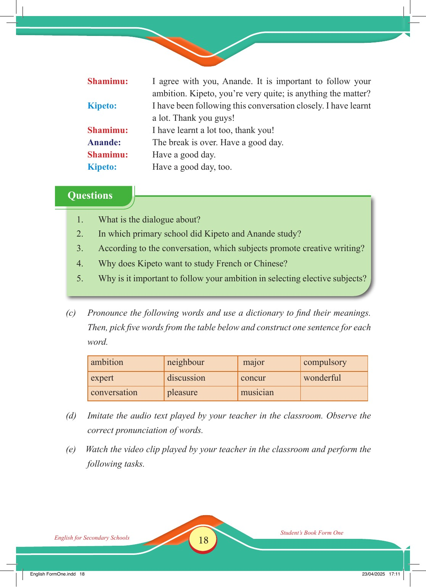

Accessible text transcript - page 18
Use the reader's read-aloud controls or select an individual segment below.
Printed book page 18. Shamimu: I agree with you, Anande. It is important to follow your ambition. Kipeto, you’re very quite; is anything the matter? Kipeto: I have been following this conversation closely. I have learnt a lot. Thank you guys! Shamimu: I have learnt a lot too, thank you! Anande: The break is over. Have a good day. Shamimu: Have a good day. Kipeto: Have a good day, too. Questions 1. What is the dialogue about? 2. In which primary school did Kipeto and Anande study? 3. According to the conversation, which subjects promote creative writing? 4. Why does Kipeto want to study French or Chinese? 5. Why is it important to follow your ambition in selecting elective subjects? (c) Pronounce the following words and use a dictionary to find their meanings. Then, pick five words from the table below and construct one sentence for each word. ambition neighbour major compulsory expert discussion concur wonderful conversation pleasure musician (d) Imitate the audio text played by your teacher in the classroom. Observe the correct pronunciation of words. (e) Watch the video clip played by your teacher in the classroom and perform the following tasks. Return to the page image